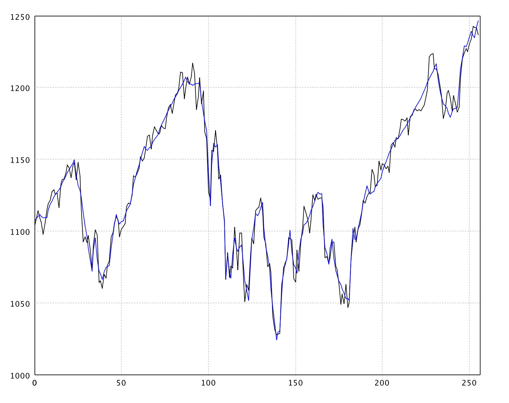

Wavelet
A wavelet is a localized oscillation that starts at zero, rises, and returns to zero. Convolving wavelets with a signal extracts time–frequency structure that a global Fourier basis cannot localize in time.
The discrete wavelet transform (DWT) samples that idea on a
dyadic grid. Like the FFT, it is a fast orthogonal transform on vectors
whose length is a power of two (pad with zeros if needed), and it is
invertible. SMILE’s implementation lives in
smile.wavelet.
Wavelet Filters
Java exposes concrete filters:
HaarWavelet, D4Wavelet,
DaubechiesWavelet, SymletWavelet
(least asymmetric), BestLocalizedWavelet, and
CoifletWavelet. You can also build a custom filter with
new Wavelet(coefficients).
Scala and Kotlin add a string factory wavelet(filter).
Names use a class prefix plus length:
d— Daubechies- 4, 6, 8, 10, 12, 14, 16, 18, 20 (
d4is special-cased viaD4Waveletwith a different centering) la— least asymmetric (symlets)- 8, 10, 12, 14, 16, 18, 20
bl— best localized- 14, 18, 20
c— Coiflet- 6, 12, 18, 24, 30
haar- Haar wavelet (also known as D2)
import smile.wavelet.*
new HaarWavelet()
new D4Wavelet()
new DaubechiesWavelet(8)
new SymletWavelet(8) // same family as filter "la8"
new BestLocalizedWavelet(14)
new CoifletWavelet(12)
HaarWavelet / D4Wavelet / DaubechiesWavelet / …
import smile.wavelet.*
wavelet("haar")
wavelet("d4")
wavelet("d8")
wavelet("la8")
wavelet("bl14")
wavelet("c12")
HaarWavelet / D4Wavelet / DaubechiesWavelet / …
import smile.wavelet.*
wavelet("haar")
wavelet("d4")
wavelet("d8")
wavelet("la8")
wavelet("bl14")
wavelet("c12")
HaarWavelet / D4Wavelet / DaubechiesWavelet / …
Discrete Wavelet Transform
transform replaces the input array with wavelet coefficients
in place; inverse reconstructs the signal. Length must be
a power of two.
import smile.wavelet.HaarWavelet
import java.util.Arrays
double[] x = {0.2, -0.4, -0.6, -0.5, -0.8, -0.4, -0.9, 0.0,
-0.2, 0.1, -0.1, 0.1, 0.7, 0.9, 0.0, 0.3}
double[] original = x.clone()
var haar = new HaarWavelet()
haar.transform(x)
Arrays.toString(x)
haar.inverse(x)
// round-trip recovers the signal (up to ~1e-15)
[-0.4, -1.3, 0.2828, -0.7071, 0.45, -0.15, -0.05, 0.65,
0.4243, -0.0707, -0.2828, -0.6364, -0.2121, -0.1414, -0.1414, -0.2121]
import smile.wavelet.*
val x = Array(0.2, -0.4, -0.6, -0.5, -0.8, -0.4, -0.9, 0.0,
-0.2, 0.1, -0.1, 0.1, 0.7, 0.9, 0.0, 0.3)
val original = x.clone()
val haar = wavelet("haar")
haar.transform(x)
x.mkString("[", ", ", "]")
haar.inverse(x)
// original ≈ x
[-0.4, -1.3, 0.2828, -0.7071, 0.45, -0.15, -0.05, 0.65,
0.4243, -0.0707, -0.2828, -0.6364, -0.2121, -0.1414, -0.1414, -0.2121]
import smile.wavelet.*
val x = doubleArrayOf(0.2, -0.4, -0.6, -0.5, -0.8, -0.4, -0.9, 0.0,
-0.2, 0.1, -0.1, 0.1, 0.7, 0.9, 0.0, 0.3)
val original = x.copyOf()
val haar = wavelet("haar")
haar.transform(x)
x.contentToString()
haar.inverse(x)
// original ≈ x
[-0.4, -1.3, 0.2828, -0.7071, 0.45, -0.15, -0.05, 0.65,
0.4243, -0.0707, -0.2828, -0.6364, -0.2121, -0.1414, -0.1414, -0.2121]
A constant signal has a single nonzero coefficient (the scaled global mean); all detail coefficients are zero:
import smile.wavelet.HaarWavelet
import java.util.Arrays
double[] c = {1, 1, 1, 1, 1, 1, 1, 1}
new HaarWavelet().transform(c)
Arrays.toString(c)
[2.8284271247461894, 0.0, 0.0, 0.0, 0.0, 0.0, 0.0, 0.0]
import smile.wavelet.*
val c = Array.fill(8)(1.0)
dwt(c, "haar")
c.mkString("[", ", ", "]")
[2.8284271247461894, 0.0, 0.0, 0.0, 0.0, 0.0, 0.0, 0.0]
import smile.wavelet.*
val c = DoubleArray(8) { 1.0 }
dwt(c, "haar")
c.contentToString()
[2.8284271247461894, 0.0, 0.0, 0.0, 0.0, 0.0, 0.0, 0.0]
Scala/Kotlin also expose functional helpers that construct the filter
for you: dwt(t, filter) and idwt(wt, filter).
Wavelet Shrinkage
Wavelet shrinkage denoises by thresholding coefficients:
- Apply the wavelet transform.
- Estimate a threshold.
- Hard thresholding zeros coefficients below the threshold; soft thresholding also shrinks the survivors toward zero.
- Invert the transform.
WaveletShrinkage
uses the universal threshold
T = σ √(2 log N), with noise scale σ from the
scaled MAD of the finest-level detail coefficients. The scaling
coefficient at index 0 (global mean) is never thresholded.
import java.awt.Color
import smile.math.MathEx
import smile.plot.swing.LinePlot
import smile.wavelet.*
MathEx.setSeed(19650218)
int n = 256
double[] noisy = new double[n]
for (int i = 0; i < n; i++) {
noisy[i] = Math.sin(2 * Math.PI * i / 64.0) + 0.25 * MathEx.random()
}
double[] smooth = noisy.clone()
WaveletShrinkage.denoise(smooth, new D4Wavelet())
var figure = LinePlot.of(noisy).figure()
figure.add(LinePlot.of(smooth, Color.BLUE))
figure.show()
(opens a plot: noisy series + D4 hard-thresholded reconstruction in blue)
import java.awt.Color
import smile.math.MathEx
import smile.plot.swing.LinePlot
import smile.wavelet.*
MathEx.setSeed(19650218)
val n = 256
val noisy = Array.tabulate(n) { i =>
Math.sin(2 * Math.PI * i / 64.0) + 0.25 * MathEx.random()
}
val smooth = noisy.clone()
wsdenoise(smooth, "d4") // or WaveletShrinkage.denoise(smooth, wavelet("d4"))
val figure = LinePlot.of(noisy).figure()
figure.add(LinePlot.of(smooth, Color.BLUE))
figure.show()
(opens a plot: noisy series + D4 hard-thresholded reconstruction in blue)
import java.awt.Color
import smile.math.MathEx
import smile.plot.swing.LinePlot
import smile.wavelet.*
MathEx.setSeed(19650218)
val n = 256
val noisy = DoubleArray(n) { i ->
Math.sin(2 * Math.PI * i / 64.0) + 0.25 * MathEx.random()
}
val smooth = noisy.copyOf()
wsdenoise(smooth, "d4")
val figure = LinePlot.of(noisy).figure()
figure.add(LinePlot.of(smooth, Color.BLUE))
figure.show()
(opens a plot: noisy series + D4 hard-thresholded reconstruction in blue)

Example: D4 shrinkage on an S&P 500 series (raw vs denoised).
Pass soft = true to
WaveletShrinkage.denoise(t, wavelet, true) or
wsdenoise(t, filter, soft = true) for soft thresholding.